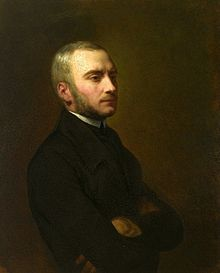

Zygmunt Krasiński

Napoleon Stanisław Adam Feliks Zygmunt Krasiński hrabia herbu Ślepowron (ur. 19 lutego 1812 w Paryżu, zm. 23 lutego 1859 tamże) — hrabia, jeden z trójcy wieszczów, największych poetów polskiego romantyzmu. II Ordynat na Opinogórze.
Powrót do strony głównej